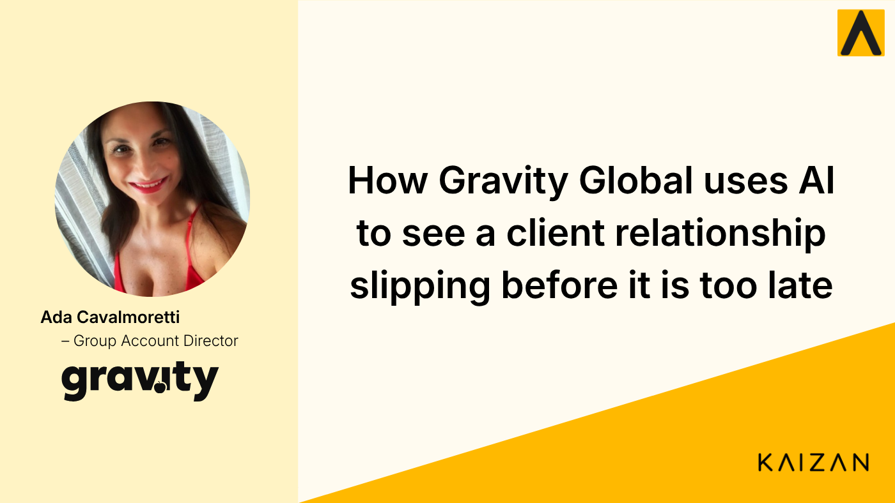

How Gravity Global Uses AI to See a Client Relationship Slipping Before It Is Too Late

Ada Cavalmoretti, Group Account Director at Gravity Global, shares how AI helps client teams catch the quiet signals of a slipping relationship, confirm their instincts, and protect the time for human work that keeps clients close.
When a client relationship goes quiet, you rarely see it coming.
We recently sat down with Ada Cavalmoretti, Group Account Director at Gravity Global, to talk about what running client relationships actually looks like right now: the pressure, the risks, and where the right tools genuinely help.
It turned into one of those conversations that puts words to something a lot of client services people feel but rarely name. If you only take one idea away, make it this one: the relationships that hurt you most are usually the ones you stopped noticing.
Watch the full conversation
Prefer to hear it in Ada's own words? Watch the full interview on YouTube.
More with less, without dropping the human part
The backdrop will be familiar to anyone in an agency. Every team is being asked to do more with less, faster, and stay consistent while they do it. Ada described the squeeze plainly: it is a real challenge when you are working with a lot less budget and a lot less time, but the expectation to deliver strategic, human-centric work has not softened at all.
"It's a real challenge when you're having to do it with a lot less budget, and a lot less time to do it in."
AI is part of how teams are navigating that new world. Used well, it clears away the manual, time-consuming tasks that eat the day but add little value, so the focus can go back to the client. That is the point Ada kept coming back to. The goal is not doing more admin faster. It is protecting the time and attention the relationship actually needs.
"Using the tools we have at our disposal, like Kaizan, is helping us reduce the manual tasks, the ones that take a long time but are actually less valuable, so that we can focus on our clients."
The drift you notice too late
Client relationships rarely break in a single moment. They erode.
Ada described the early signals well. The client becomes a little less engaged. The feedback gets vague. You start to see less interest, less caring. Nothing is said, but something has shifted.
That is when a partnership quietly turns transactional, and it is a dangerous place to be. As she put it, it can develop very slowly, sitting underneath everything, and sometimes you do not realise it is happening until it already has.
"Where your partnership becomes more transactional, it's really dangerous, because it can be very slow in developing. It just sits underneath, and sometimes you don't realise it's happening."
This is the real cost of doing more with less. When your attention is stretched across a full book of clients, the quiet signals are the first thing to slip past you. By the time the problem is obvious, you are already on the back foot.
Instinct is good. Confirmation is better.
Experienced account directors are not short on instinct. They can usually feel when something is off. Ada was clear that the value of the right visibility is not that it replaces that instinct, but that it sharpens and confirms it.
She talked about being able to gauge the factors that are hard to hold in your head across every account: engagement, how often you are actually interacting, the sentiment underneath the conversation. You have a good instinct yourself, she said, but it is really helpful to have something that gives you that insight and that information.
"You have a good instinct yourself, but it's really helpful to have a tool that gives you that insight, that information."
Part of the value is validation. Sometimes, she noted, it is not just about knowing what you know, but having it confirmed. And part of it is simple recall. You already know what needs doing, but with so much on at once, being reminded of the right thing at the right moment matters.
"Sometimes it's not just about knowing what you know, but having it confirmed. It's equally helpful."
Never walk into a call cold
The post-call recaps came up again and again, and not for the reason you might expect.
They are useful after a meeting, yes. But Ada said their real power shows up when there is a diary clash and she cannot attend. Instead of booking yet another call so a colleague can download everything, she can open the recap, get up to speed on what was said, the actions, and the next steps, and step straight into action.
"I can go into the recap and get myself up to speed with everything that's been said, the actions, the next steps. I don't have to set up yet another call for my colleagues to download all the information. I can step into action immediately."
Because the platform holds the full picture of the client, that context runs broader than a single meeting. It covers the account, the market, and the competitors. Ada found that especially valuable for onboarding, whether it is a new recruit finding their feet or someone already in the agency moving from one client to another and needing to get up to speed fast.
The scoring she cannot stop checking
If there was one thing Ada returned to most, it was the client health scoring. She admitted, with a laugh, that she is a little obsessed with it. How are we doing? Has anything changed? What have I not thought about? And most importantly, what can I do to make it better?
"I've got to be honest, I'm quite obsessed with the scoring. How are we doing? Has anything changed? What can I do to make it better?"
That last question is the whole point. A score only earns its place if it prompts an action. Being able to look at a dashboard and understand at a glance how a client is doing turns a vague feeling into something you can actually work on, before the drift sets in rather than after.
Like having a knowledgeable colleague
We asked Ada to describe Kaizan in three words. She could not quite stop at three, and where she landed had nothing to do with software: knowledgeable, helpful, and like a friend or a colleague. Almost, she said, like somebody else she can ask a question to.
"Knowledgeable, helpful, and like a friend, like a colleague. It's almost like somebody else that I can ask a question to."
That is the version of AI worth building toward for client services teams. Not something that quietly replaces the human relationship, but something that protects it. It catches the signals you would have missed, confirms the instincts you already trust, and gives you back the time and clarity to do the strategic, human work that keeps clients close.
In a world of more with less, that is what stops a relationship from going quiet before you ever see it coming.